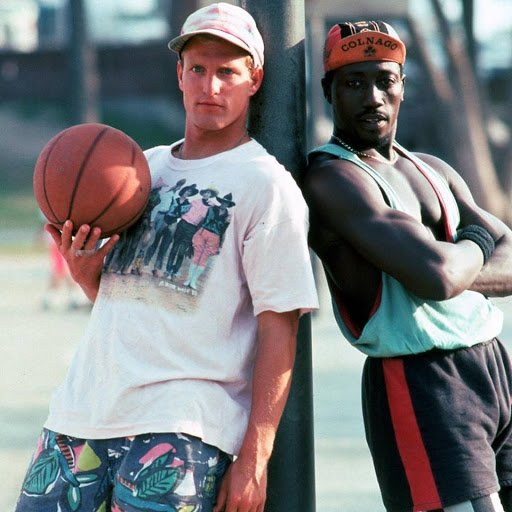

J'avais onze ans environ la première fois que j'ai entendu parler de ce film. Je faisais encore du basket à l'époque, et j'étais un grand fan de Jordan. Un film qui parlait de playgrounds, de paris et de gars qui se chambrent entre deux paniers, forcément, ça me parlait.
Je ne l'ai vu que quelques années plus tard. Et j'ai trouvé ça vraiment excellent. Le basket est partout dans le film, mais ce qui m'a scotché, c'est le duo Wesley Snipes / Woody Harrelson. Ils fonctionnent à merveille : l'un a le jeu, l'autre a la gueule, et les deux ont un talent fou pour se mettre dans la merde.
Ce soir, on retourne sur le bitume.

Les blancs ne savent pas sauter — Snipes et Harrelson
Les blancs ne savent pas sauter.
Le titre original est White Men Can't Jump. Le film sort en 1992. C'est une comédie sportive écrite et réalisée par Ron Shelton, qui venait de signer Bull Durham et passera plus tard à Tin Cup. Il connaît le sport de l'intérieur et il sait en faire du cinéma sans le transformer en spot publicitaire.
Le film se passe à Los Angeles, sur les playgrounds de Venice Beach et des quartiers voisins. Sidney Deane (Wesley Snipes) y est un joueur de rue qui connaît tous les trucs. Billy Hoyle (Woody Harrelson) est un ancien joueur universitaire, blanc, qui a l'air d'un touriste et plume les adversaires. Ils s'associent pour jouer en 2 contre 2 et arnaquer tout le monde. Rosie Perez joue Gloria, la compagne de Billy, qui passe son temps à préparer le jeu télévisé Jeopardy!.
Un casting en or, une comédie qui tient autant par ses dialogues que par ses matchs, et une bande-son hip-hop et R&B très ancrée dans son époque.
Le film est produit par la 20th Century Fox, avec un budget modeste pour un film de studio, et sort au printemps 1992. Ron Shelton écrit lui-même le scénario. Il connaît très bien ce milieu : ancien joueur de baseball en ligues mineures, il a aussi pratiqué le basket, et ça se sent dans la manière dont les personnages parlent de leur sport.
Les deux acteurs principaux sont à un moment charnière. Wesley Snipes sortait de New Jack City et de Jungle Fever, et il avait déjà la présence d'une future star d'action. Woody Harrelson était encore surtout connu pour Cheers, et ce rôle montrait qu'il pouvait porter un film sur grand écran.
Shelton fait aussi un choix de mise en scène important : les matchs ne sont pas filmés comme de grands moments de sport, mais comme des conversations. On y parle, on y provoque, on y négocie. C'est ce qui donne au film son rythme de comédie, et ce qui le distingue des autres films de sport de l'époque.

Billy et Sidney, entre deux matchs
Billy Hoyle est un ancien joueur universitaire un peu perdu, qui vit à Los Angeles avec sa compagne Gloria. Il n'a pas l'air d'un sportif, et c'est son arme : sur les playgrounds, tout le monde le prend pour un pigeon, et il joue de ça pour empocher de l'argent. Problème : il doit de l'argent à des gens qui ne plaisantent pas.
Sa route croise celle de Sidney Deane, un joueur de rue qui connaît le terrain mieux que personne et qui n'a aucune envie de se faire doubler par un blanc au look de touriste. Après un premier affrontement, les deux hommes finissent par comprendre qu'ils ont tout intérêt à s'associer. À deux, ils sont imbattables, tant qu'ils continuent à se faire passer pour des adversaires.
L'argent coule, mais la confiance est fragile. Entre les paris, les dettes, les mensonges et les rêves de tournoi, le duo va devoir apprendre à jouer ensemble, sur le terrain comme en dehors.
Sous ses airs de comédie de potes, le film parle surtout d'illusion et de préjugés. Tout repose sur le décalage entre ce qu'on voit et ce qu'on est : Billy passe pour un joueur médiocre à cause de sa couleur de peau, Sidney se fait sous-estimer pour d'autres raisons, et chacun se sert des idées reçues de l'autre pour gagner. Le titre lui-même est une provocation qui devient un outil de travail.
Shelton filme le trash-talk comme un art à part entière. Les répliques sont des armes, les joutes verbales valent les paniers, et c'est là que le duo Snipes / Harrelson fait la différence : un rythme, des silences, des regards. Le film tient autant au montage des dialogues qu'à celui des actions.
Il y a aussi une vraie tendresse pour ses personnages perdants. Billy est un joueur compulsif qui se ment à lui-même, Gloria rêve de sortir de sa condition, Sidney essaie de faire vivre sa famille. Personne n'est à l'abri, et le basket sert de miroir à des vies précaires.
Enfin, c'est un film très ancré dans Los Angeles du début des années 90 : la chaleur, la plage, les quartiers, le hip-hop. Un portrait de ville autant qu'un film de sport.

Billy contre Sidney : le trash-talk avant le panier
Le film n'a pas eu besoin d'être redécouvert pour exister : il a bien marché à sa sortie, et il a ensuite vécu une longue seconde vie en vidéo et à la télé. C'est le genre de film qu'on regarde, qu'on cite et qu'on se repasse entre potes.
D'abord pour ses répliques. Le trash-talk du film est entré dans la culture basket, et beaucoup de joueurs amateurs en reprennent des morceaux sur les terrains sans toujours savoir d'où ça vient.
Ensuite pour son duo. Snipes et Harrelson ont une alchimie qu'on retrouve rarement, et on les associe encore aujourd'hui à ce film avant tout autre.
Enfin, parce qu'il a bien vieilli. Les matchs sont filmés sans trucages, les personnages restent attachants, et son sujet (les préjugés, l'argent, les illusions) n'a rien de daté. Un remake a d'ailleurs été produit des années plus tard, ce qui prouve que le titre et l'idée parlent encore, mais l'original reste la référence.
Parce que c'est un film qui se revoit sans effort. Il dure un peu moins de deux heures, ne s'étire jamais, et chaque scène a sa petite idée de dialogue ou de situation. On peut le lancer un soir sans rien attendre et se retrouver embarqué.
Parce qu'il montre un basket qu'on ne voit plus : celui des playgrounds, des paris à dix dollars, des tournois improvisés, loin des arènes et des contrats. Pour qui a grandi avec Jordan, c'est l'autre côté du décor, celui des gars qui jouent pour manger.
Parce que Snipes et Harrelson y sont à leur meilleur niveau de complicité. Revoir ce duo, c'est se rappeler que la comédie de potes peut être aussi une vraie comédie d'acteurs.
Et parce que, au fond, c'est un film qui parle des gens qui se sous-estiment entre eux. Ça marche encore très bien aujourd'hui.
Les blancs ne savent pas sauter, c'est une comédie qui a la gueule d'un film de sport et le cœur d'un film de potes. Ron Shelton y filme le basket comme on le vit vraiment : à coups de répliques, de paris et d'orgueil. Snipes et Harrelson portent le tout avec une complicité qui n'a pas pris une ride.
Trente ans plus tard, on cite toujours le film, on le revoit toujours, et on se surprend à rire aux mêmes endroits. Pour un épisode 01 de saison 3, difficile de rêver mieux comme point de départ.
La cassette est dans le lecteur. On rembobine.
Titre original
White Men Can't Jump
Pays
États-Unis
Genre
Comédie · Sport
Durée
115 min
Producteur
20th Century Fox
Avec aussi
Rosie Perez · Tyra Ferrell · Cylk Cozart
Musique
Bennie Wallace
Note
Mes années basket, l'époque Jordan
SOMEDAY — S3 EP. 01